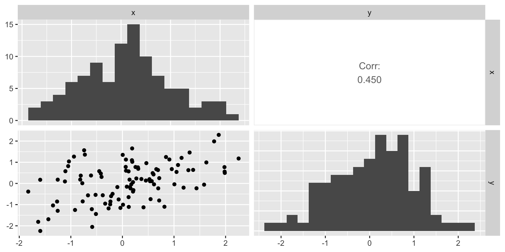
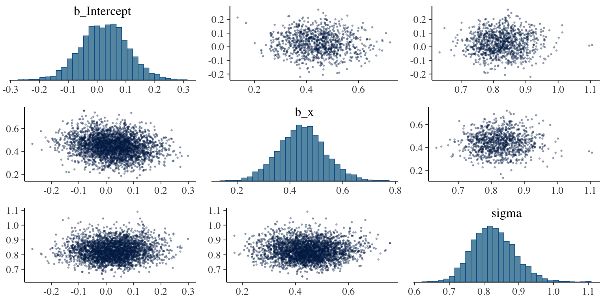
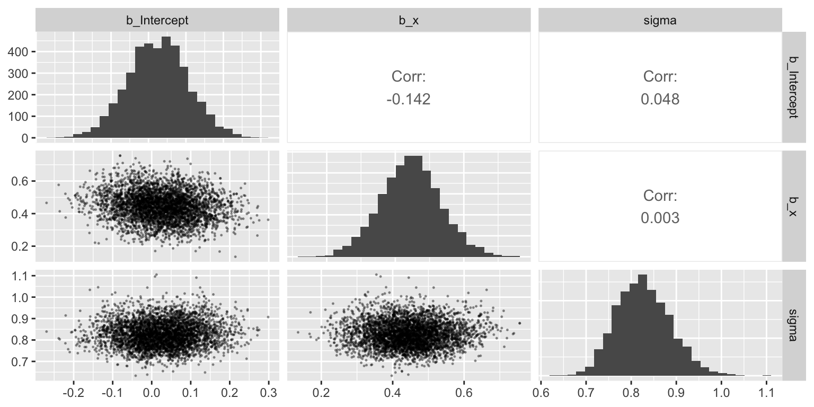
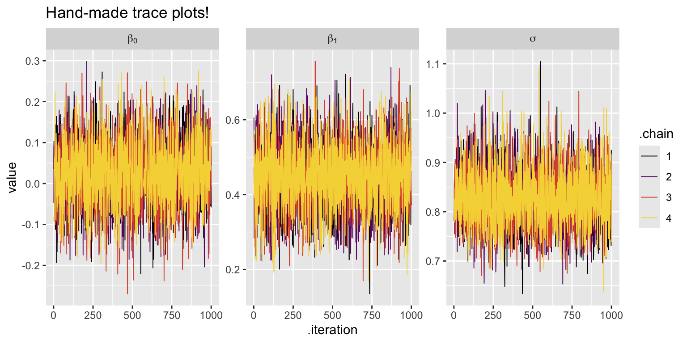
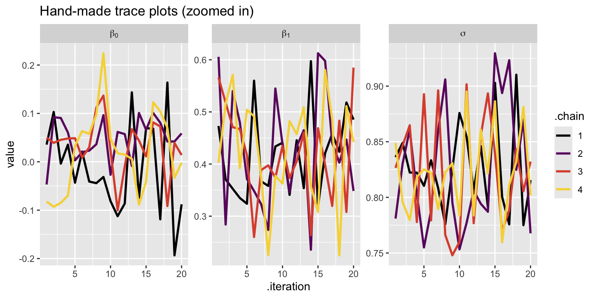
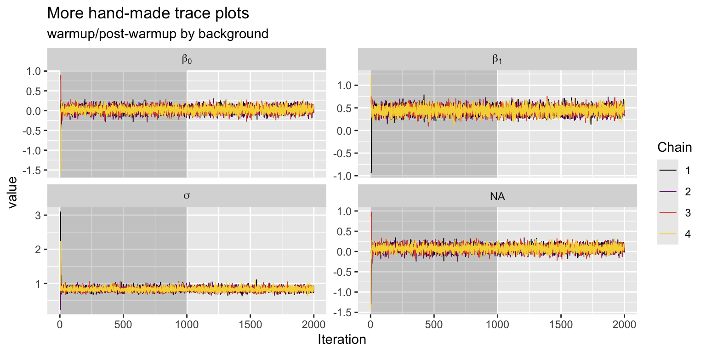
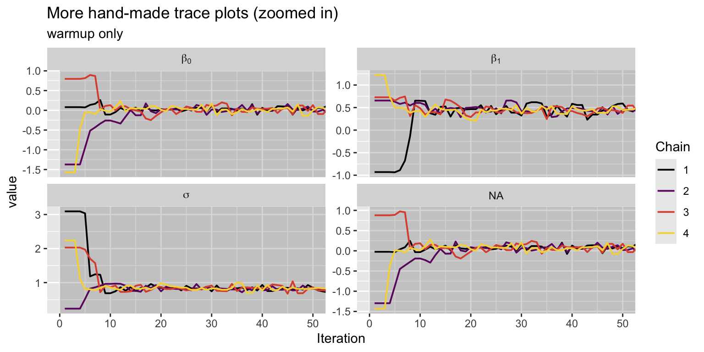
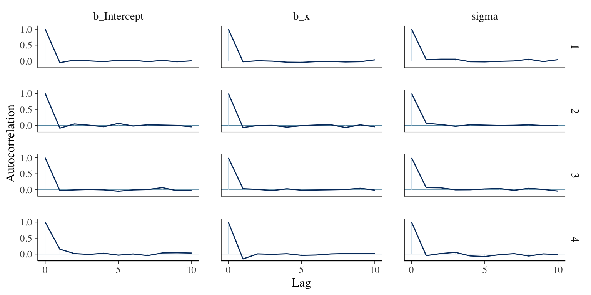

Code
library(tidyverse)
library(faux)
library(GGally)
library(brms)
library(ggmcmc)
library(bayesplot)Princeton University
KW
April 16, 2025
This worksheet helps to give you a better idea about what to do with the trace plots.
Load the primary packages.
This time we’ll simulate data with the faux package.
Rows: 100
Columns: 2
$ x <dbl> -0.232341576, 0.137981847, -0.268214782, 1.302539315, 0.612654423, -…
$ y <dbl> -0.85270825, 0.18009772, -1.17913643, 1.46056809, -0.04193022, 0.173…We might look at the data with a ggpairs() plot.

Check the sample statistics.
Let’s fit a simple model
\[ \begin{align} y_i & \sim \operatorname{Normal}(\mu_i, \sigma) \\ \mu_i & = \beta_0 + \beta_1 x_i \\ \beta_0 & \sim \operatorname{Normal}(0, 1) \\ \beta_1 & \sim \operatorname{Normal}(0, 1) \\ \sigma & \sim \operatorname{Exponential}(1), \end{align} \]
As we fit the model with brm(), take the opportunity to consider some of the default settings.
fit13.b <- brm(
data = d,
family = gaussian,
y ~ 1 + x,
prior = prior(normal(0, 1), class = Intercept) +
prior(normal(0, 1), class = b) +
prior(exponential(1), class = sigma),
seed = 13,
# default settings we've been ignoring up to this point
iter = 2000, warmup = 1000, chains = 4, cores = 1
# if you have a good computer, maybe try setting cores = 4
)If you’d like to use multiple cores, but you’re not sure how many you have, execute parallel::detectCores().
I have 12 cores.
Check the model summary.
Family: gaussian
Links: mu = identity; sigma = identity
Formula: y ~ 1 + x
Data: d (Number of observations: 100)
Draws: 4 chains, each with iter = 2000; warmup = 1000; thin = 1;
total post-warmup draws = 4000
Regression Coefficients:
Estimate Est.Error l-95% CI u-95% CI Rhat Bulk_ESS Tail_ESS
Intercept 0.03 0.08 -0.13 0.18 1.00 3868 3294
x 0.45 0.09 0.27 0.63 1.00 4470 2925
Further Distributional Parameters:
Estimate Est.Error l-95% CI u-95% CI Rhat Bulk_ESS Tail_ESS
sigma 0.83 0.06 0.72 0.95 1.00 3447 2920
Draws were sampled using sampling(NUTS). For each parameter, Bulk_ESS
and Tail_ESS are effective sample size measures, and Rhat is the potential
scale reduction factor on split chains (at convergence, Rhat = 1).Look at the parameter posteriors in a pairs() plot.
The pairs() plot is a wrapper around the mcmc_pairs() function from bayesplot. By default, half of the chains are depicted in the scatter plots below the diagonal, and the other half are displayed above the diagonal. The basic idea is you want the results form different chains to mirror one another. You can control this behavior with the condition argument.

This particular arrangement is a little silly, but it should give you a sense of how to control the output. Also, by default the histograms on the diagonal use the draws from all the chains.
If you wanted, you could also make a similar kind of plot with ggpairs().

Now take a look at the plot() output.
These trace plots look like a dream. They have the appearance of fuzzy caterpillars, which is why they’re even sometimes called caterpillar plots.
Let’s work directly with the chains via as_draws_df().
Rows: 4,000
Columns: 9
$ b_Intercept <dbl> 0.03551043, 0.10296856, -0.00374354, 0.03544423, -0.043189…
$ b_x <dbl> 0.4729974, 0.3704769, 0.3525468, 0.3349094, 0.3238866, 0.5…
$ sigma <dbl> 0.8361793, 0.8490243, 0.8223383, 0.8222226, 0.8103350, 0.8…
$ Intercept <dbl> 0.0890552806, 0.1449077557, 0.0361659049, 0.0733570717, -0…
$ lprior <dbl> -2.789885, -2.766027, -2.723014, -2.718872, -2.700685, -2.…
$ lp__ <dbl> -124.0759, -124.7992, -124.6012, -124.7124, -125.3926, -12…
$ .chain <int> 1, 1, 1, 1, 1, 1, 1, 1, 1, 1, 1, 1, 1, 1, 1, 1, 1, 1, 1, 1…
$ .iteration <int> 1, 2, 3, 4, 5, 6, 7, 8, 9, 10, 11, 12, 13, 14, 15, 16, 17,…
$ .draw <int> 1, 2, 3, 4, 5, 6, 7, 8, 9, 10, 11, 12, 13, 14, 15, 16, 17,…We can use those meta-data columns to make our own trace plots with ggplot functions.
as_draws_df(fit13.b) %>%
pivot_longer(b_Intercept:sigma) %>%
mutate(.chain = factor(.chain),
# not needed, but makes for Greek formatted strip labels
greek = case_when(
name == "b_Intercept" ~ "beta[0]",
name == "b_x" ~ "beta[1]",
name == "sigma" ~ "sigma"
)) %>%
ggplot(aes(x = .iteration, y = value, color = .chain)) +
geom_line(linewidth = 1/3) +
scale_color_viridis_d(option = "B", end = .9) +
ggtitle("Hand-made trace plots!") +
facet_wrap(~ greek, labeller = label_parsed, scales = "free_y")
We might restrict to the first few post-warmup iterations to help give us a better sense of what’s happening.
as_draws_df(fit13.b) %>%
filter(.iteration < 21) %>%
pivot_longer(b_Intercept:sigma) %>%
mutate(.chain = factor(.chain),
# not needed, but makes for nice formatting
greek = case_when(
name == "b_Intercept" ~ "beta[0]",
name == "b_x" ~ "beta[1]",
name == "sigma" ~ "sigma"
)) %>%
ggplot(aes(x = .iteration, y = value, color = .chain)) +
geom_line(linewidth = 1) +
scale_color_viridis_d(option = "B", end = .9) +
ggtitle("Hand-made trace plots (zoomed in)") +
facet_wrap(~ greek, labeller = label_parsed, scales = "free_y")
Note that these are all post-warmup draws. The brms package doesn’t make it easy to visualize the warmup draws. But we can do so with a little help from the ggmcmc package’s ggs() function.
# A tibble: 1 × 2
min max
<int> <int>
1 1 2000Note how how the values in the Iteration column range from 1 to 2,000. By brms default, the first 1,000 of those iterations are the warmup’s. Here is how we can use the ggs() output to make trace plots that include the warmup draws.
ggs(fit13.b) %>%
filter(Parameter != "lprior") %>%
mutate(Chain = factor(Chain),
greek = case_when(
Parameter == "b_Intercept" ~ "beta[0]",
Parameter == "b_x" ~ "beta[1]",
Parameter == "sigma" ~ "sigma"
)) %>%
ggplot(aes(x = Iteration, y = value, color = Chain)) +
# this marks off the warmups
annotate(geom = "rect",
xmin = 0, xmax = 1000, ymin = -Inf, ymax = Inf,
fill = "black", alpha = 1/6, linewidth = 0) +
geom_line(linewidth = 1/3) +
scale_color_viridis_d(option = "B", end = .9) +
labs(title = "More hand-made trace plots",
subtitle = "warmup/post-warmup by background") +
facet_wrap(~ greek, labeller = label_parsed, scales = "free_y")
Let’s take a closer look at the first few warmup iterations.
ggs(fit13.b) %>%
filter(Parameter != "lprior") %>%
mutate(Chain = factor(Chain),
greek = case_when(
Parameter == "b_Intercept" ~ "beta[0]",
Parameter == "b_x" ~ "beta[1]",
Parameter == "sigma" ~ "sigma"
)) %>%
ggplot(aes(x = Iteration, y = value, color = Chain)) +
annotate(geom = "rect",
xmin = 0, xmax = 1000, ymin = -Inf, ymax = Inf,
fill = "black", alpha = 1/6, linewidth = 0) +
geom_line(linewidth = 2/3) +
scale_color_viridis_d(option = "B", end = .9) +
coord_cartesian(xlim = c(0, 50)) +
labs(title = "More hand-made trace plots (zoomed in)",
subtitle = "warmup only") +
facet_wrap(~ greek, labeller = label_parsed, scales = "free_y")
In the first few warmup draws, the chain values are quite unstable. They are not representative of the target posterior distribution and are used solely to tune the sampler. The warmup iterations are heavily influenced by the initial parameters. Discarding them ensures that inferences are made only using samples from the well-explored, adapted phase of sampling.
Another issue is autocorrelation, the degree to which a given HMC draw is correlated with the previous draw(s). We can make a plot of the autocorrelations with the mcmc_acf() function from the bayesplot package.

This is what we like to see: Nice L-shaped autocorrelation plots. Low autocorrelations like this are one of the major achievements of Stan’s implementation of HMC. It’s not uncommon for MCMC via the older Gibbs sampler method to routinely show much higher autocorrelations. You can get a sense of this by comparing the various models in Kruschke’s (2015) textbook, which often uses the Gibbs sampler, versus their brms() analogues in my (2023) ebook translation.
Mixing describes how efficiently MCMC chains explore the posterior distribution. Good mixing means samples move freely across the parameter space. And high autocorrelation => poor mixing.
Because you want no autocorrelation between the draws, which indicate that the samples are nearly independent and that the sampler is exploring the posterior efficiently. At the first few warmup iterations, the autocorrelation would be high but should drop off quickly. This is also why we discard the first few warmup iterations.
An undesirable autocorrelation would be where the autocorrelation does not drop off quickly and instead plateus. This means that the chain is highly correlated and it would take longer to explore the posterior space.
Those low autocorrelations also have a lot to do with our effective sample size (ESS) estimates. Take another look at the summary() output.
Family: gaussian
Links: mu = identity; sigma = identity
Formula: y ~ 1 + x
Data: d (Number of observations: 100)
Draws: 4 chains, each with iter = 2000; warmup = 1000; thin = 1;
total post-warmup draws = 4000
Regression Coefficients:
Estimate Est.Error l-95% CI u-95% CI Rhat Bulk_ESS Tail_ESS
Intercept 0.03 0.08 -0.13 0.18 1.00 3868 3294
x 0.45 0.09 0.27 0.63 1.00 4470 2925
Further Distributional Parameters:
Estimate Est.Error l-95% CI u-95% CI Rhat Bulk_ESS Tail_ESS
sigma 0.83 0.06 0.72 0.95 1.00 3447 2920
Draws were sampled using sampling(NUTS). For each parameter, Bulk_ESS
and Tail_ESS are effective sample size measures, and Rhat is the potential
scale reduction factor on split chains (at convergence, Rhat = 1).There used to be a single ESS column. Starting with version 2.10.0, brms returns two columns: Bulk_ESS and Tail_ESS. These originate from Vehtari et al (2019). From the paper, we read:
When reporting quantile estimates or posterior intervals, we strongly suggest assessing the convergence of the chains for these quantiles. In Section 4.3, we show that convergence of Markov chains is not uniform across the parameter space, that is, convergence might be different in the bulk of the distribution (e.g., for the mean or median) than in the tails (e.g., for extreme quantiles). We propose diagnostics and effective sample sizes specifically for extreme quantiles. This is different from the standard ESS estimate (which we refer to as bulk-ESS), which mainly assesses how well the centre of the distribution is resolved. Instead, these “tail-ESS” measures allow the user to estimate the MCSE for interval estimates. (pp. 672-673)
We generally like the values in both the Bulk_ESS and Tail_ESS columns to be as close to the total number of post-warmup draws as possible, which would be 4,000 for a default brm() model. Sometimes, as in the case of the Bulk_ESS value for our \(\beta_1\) parameter, the HMC chains are so efficient that we can get larger numbers than the actual number of post-warmup draws. This is related to when we have negative autocorrelations (see above).
How much is enough, and how low is too low? Yeah, indeed… Higher is generally better, with diminishing returns rolling in somewhere between 1,000 and 10,000. brms will give you a warning message when the ESS estimates get below a couple hundred.
Now look back at the Rhat column in the summary() output. This is the potential scale reduction factor \(\hat R\). It has its origins in Gelman & Rubin (1992), but the current version used in brms is from Vehtari et al (2019), as cited above. In short, it is something of a ratio of the between-chain variation versus the within-chain variation. This ratio is usually a little above 1, and we want it to be as close to 1 as possible. The Stan team (e.g., https://mc-stan.org/rstan/reference/Rhat.html) recommends against values greater than 1.05. In our case, we’re good to go.
Now let’s break the model. This time, we’ll subset the d data to just the first 2 rows, we’ll make the priors very wide on the scale of the data, and we’ll dramatically reduce the warmup period.
fit14.b <- brm(
data = d %>% slice(1:2),
family = gaussian,
y ~ 1 + x,
# don't use priors like this for real data analyses
prior = prior(normal(0, 100000), class = Intercept) +
prior(normal(0, 100000), class = b) +
prior(uniform(0, 100000), class = sigma),
seed = 14,
iter = 1100, warmup = 100, chains = 4, cores = 4
)Check the parameter summary.
Family: gaussian
Links: mu = identity; sigma = identity
Formula: y ~ 1 + x
Data: d %>% slice(1:2) (Number of observations: 2)
Draws: 4 chains, each with iter = 1100; warmup = 100; thin = 1;
total post-warmup draws = 4000
Regression Coefficients:
Estimate Est.Error l-95% CI u-95% CI Rhat Bulk_ESS Tail_ESS
Intercept -1782.00 3889.59 -12359.76 4349.70 1.60 7 13
x -1229.97 5509.65 -12317.78 8154.73 2.34 5 14
Further Distributional Parameters:
Estimate Est.Error l-95% CI u-95% CI Rhat Bulk_ESS Tail_ESS
sigma 10474.76 15021.51 118.08 58196.81 1.26 11 84
Draws were sampled using sampling(NUTS). For each parameter, Bulk_ESS
and Tail_ESS are effective sample size measures, and Rhat is the potential
scale reduction factor on split chains (at convergence, Rhat = 1).Never ignore Warning messages like that.
Those Rhat, Bulk_ESS, and Tail_ESS look really bad. Also notice how large the posterior means (Estimate) and standard deviations (Est.Error) are. Seems off, eh?
Let’s investigate further with a pairs() plot.
This is a full-scale disaster. DO NOT trust model results from chains that look like this.
In this case, just giving the model a longer warmup period helped a lot.
fit15.b <- brm(
data = d %>% slice(1:2),
family = gaussian,
y ~ 1 + x,
# don't use priors like this in real life
prior = prior(normal(0, 100000), class = Intercept) +
prior(normal(0, 100000), class = b) +
prior(uniform(0, 100000), class = sigma),
seed = 14,
iter = 2000, warmup = 1000, chains = 4, cores = 4
)We still have a lot of Warning messages, but things have improved.
We can do an even better with default weakly-regularizing priors.
Now look at the parameter summaries.
Family: gaussian
Links: mu = identity; sigma = identity
Formula: y ~ 1 + x
Data: d %>% slice(1:2) (Number of observations: 2)
Draws: 4 chains, each with iter = 2000; warmup = 1000; thin = 1;
total post-warmup draws = 4000
Regression Coefficients:
Estimate Est.Error l-95% CI u-95% CI Rhat Bulk_ESS Tail_ESS
Intercept -0.22 0.53 -1.28 0.94 1.01 2130 1856
x 0.50 1.02 -1.52 2.43 1.00 1256 960
Further Distributional Parameters:
Estimate Est.Error l-95% CI u-95% CI Rhat Bulk_ESS Tail_ESS
sigma 0.86 0.57 0.17 2.35 1.01 728 245
Draws were sampled using sampling(NUTS). For each parameter, Bulk_ESS
and Tail_ESS are effective sample size measures, and Rhat is the potential
scale reduction factor on split chains (at convergence, Rhat = 1).Those Warning messages still remain, but they’re less dire than before. Also, most of the other diagnostics look better. I still wouldn’t trust this model. It is only based on 2 data points, after all. But look how far we got by paying attention to the diagnostics and picking better priors.
Gelman, A. and Rubin, D. (1992). Inference from iterative simulation using multiple sequences. Statistical Science, 7(4):457–472. https://dx.doi.org/10.1214/ss/1177011136
Kruschke, J. K. (2015). Doing Bayesian data analysis: A tutorial with R, JAGS, and Stan. Academic Press. https://sites.google.com/site/doingbayesiandataanalysis/
Kurz, A. S. (2023). Doing Bayesian data analysis in brms and the tidyverse (Version 1.1.0). https://bookdown.org/content/3686/
McElreath, R. (2020). Statistical rethinking: A Bayesian course with examples in R and Stan (Second Edition). CRC Press. https://xcelab.net/rm/statistical-rethinking/
Vehtari, A., Gelman, A., Simpson, D., Carpenter, B., & Bürkner, P.-C. (2019). Rank-normalization, folding, and localization: An improved \(\widehat R\) for assessing convergence of MCMC (with discussion). Bayesian Analysis, 16(2), 667-718. https://doi.org/10.1214/20-BA1221
R version 4.4.1 (2024-06-14)
Platform: x86_64-apple-darwin20
Running under: macOS 15.4.1
Matrix products: default
BLAS: /Library/Frameworks/R.framework/Versions/4.4-x86_64/Resources/lib/libRblas.0.dylib
LAPACK: /Library/Frameworks/R.framework/Versions/4.4-x86_64/Resources/lib/libRlapack.dylib; LAPACK version 3.12.0
locale:
[1] en_US.UTF-8/en_US.UTF-8/en_US.UTF-8/C/en_US.UTF-8/en_US.UTF-8
time zone: America/New_York
tzcode source: internal
attached base packages:
[1] stats graphics grDevices datasets utils methods base
other attached packages:
[1] bayesplot_1.11.1 ggmcmc_1.5.1.1 brms_2.22.0 Rcpp_1.0.14
[5] GGally_2.2.1 faux_1.2.2 lubridate_1.9.4 forcats_1.0.0
[9] stringr_1.5.1 dplyr_1.1.4 purrr_1.0.4 readr_2.1.5
[13] tidyr_1.3.1 tibble_3.2.1 ggplot2_3.5.2 tidyverse_2.0.0
loaded via a namespace (and not attached):
[1] tidyselect_1.2.1 viridisLite_0.4.2 farver_2.1.2
[4] loo_2.8.0 fastmap_1.2.0 tensorA_0.36.2.1
[7] digest_0.6.37 timechange_0.3.0 estimability_1.5.1
[10] lifecycle_1.0.4 StanHeaders_2.32.10 processx_3.8.5
[13] magrittr_2.0.3 posterior_1.6.0 compiler_4.4.1
[16] rlang_1.1.4 tools_4.4.1 utf8_1.2.4
[19] yaml_2.3.10 knitr_1.49 labeling_0.4.3
[22] bridgesampling_1.1-2 htmlwidgets_1.6.4 pkgbuild_1.4.6
[25] curl_6.2.0 plyr_1.8.9 RColorBrewer_1.1-3
[28] abind_1.4-8 withr_3.0.2 grid_4.4.1
[31] stats4_4.4.1 xtable_1.8-4 colorspace_2.1-1
[34] inline_0.3.21 emmeans_1.10.7 scales_1.3.0
[37] cli_3.6.3 mvtnorm_1.3-3 rmarkdown_2.28
[40] generics_0.1.3 RcppParallel_5.1.10 rstudioapi_0.17.1
[43] reshape2_1.4.4 tzdb_0.4.0 rstan_2.32.6
[46] parallel_4.4.1 matrixStats_1.5.0 vctrs_0.6.5
[49] V8_6.0.3 Matrix_1.7-0 jsonlite_1.8.8
[52] callr_3.7.6 hms_1.1.3 glue_1.8.0
[55] ps_1.9.0 ggstats_0.9.0 codetools_0.2-20
[58] distributional_0.5.0 stringi_1.8.4 gtable_0.3.6
[61] QuickJSR_1.5.2 munsell_0.5.1 pillar_1.10.1
[64] htmltools_0.5.8.1 Brobdingnag_1.2-9 R6_2.5.1
[67] evaluate_1.0.3 lattice_0.22-6 backports_1.5.0
[70] renv_1.0.7 rstantools_2.4.0 coda_0.19-4.1
[73] gridExtra_2.3 nlme_3.1-164 checkmate_2.3.2
[76] xfun_0.51 pkgconfig_2.0.3 ---
title: "PSY 504: Bayes Lab 3_2, HMC Diagnostics"
subtitle: "Princeton University"
date: "2025-04-16"
author: "KW"
categories: [code, analysis]
format:
html:
self-contained: false
anchor-sections: true
code-tools: true
code-fold: true
fig-width: 8
fig-height: 4
code-block-bg: "#f1f3f5"
code-block-border-left: "#31BAE9"
mainfont: Source Sans Pro
theme: journal
toc: true
toc-depth: 3
toc-location: left
captions: true
cap-location: margin
table-captions: true
tbl-cap-location: margin
reference-location: margin
pdf:
pdf-engine: lualatex
toc: false
number-sections: true
number-depth: 2
top-level-division: section
reference-location: document
listings: false
header-includes:
\usepackage{marginnote, here, relsize, needspace, setspace}
\def\it{\emph}
execute:
freeze: auto
echo: true
message: false
warning: false
fig-align: center
fig-width: 12
fig-height: 8
editor_options:
chunk_output_type: inline
code-overflow: wrap
html:
code-fold: true
code-tools: true
editor: visual
---
This worksheet helps to give you a better idea about what to do with the trace plots.
## Packages and data
Load the primary packages.
```{r, warning = FALSE, message = FALSE}
library(tidyverse)
library(faux)
library(GGally)
library(brms)
library(ggmcmc)
library(bayesplot)
```
This time we'll simulate data with the **faux** package.
```{r}
# how many cases?
n <- 100
# population values
mu <- 0
sigma <- 1
rho <- .5
# simulate and save
set.seed(1)
d <- rnorm_multi(
n = n,
mu = c(mu, mu),
sd = c(sigma, sigma),
r = rho,
varnames = list("x", "y")
)
glimpse(d)
```
We might look at the data with a `ggpairs()` plot.
```{r}
d %>%
ggpairs(diag = list(continuous = wrap("barDiag", binwidth = 0.25)),
upper = list(continuous = wrap("cor", stars = FALSE)))
```
Check the sample statistics.
```{r}
# univariate
d %>%
pivot_longer(everything()) %>%
group_by(name) %>%
summarise(m = mean(value),
s = sd(value))
# bivariate
d %>%
summarise(r = cor(y, x))
```
## Base model
Let's fit a simple model
$$
\begin{align}
y_i & \sim \operatorname{Normal}(\mu_i, \sigma) \\
\mu_i & = \beta_0 + \beta_1 x_i \\
\beta_0 & \sim \operatorname{Normal}(0, 1) \\
\beta_1 & \sim \operatorname{Normal}(0, 1) \\
\sigma & \sim \operatorname{Exponential}(1),
\end{align}
$$
As we fit the model with `brm()`, take the opportunity to consider some of the default settings.
```{r fit13.b, results = "hide"}
fit13.b <- brm(
data = d,
family = gaussian,
y ~ 1 + x,
prior = prior(normal(0, 1), class = Intercept) +
prior(normal(0, 1), class = b) +
prior(exponential(1), class = sigma),
seed = 13,
# default settings we've been ignoring up to this point
iter = 2000, warmup = 1000, chains = 4, cores = 1
# if you have a good computer, maybe try setting cores = 4
)
```
If you'd like to use multiple cores, but you're not sure how many you have, execute `parallel::detectCores()`.
#### Question 1: How many cores do you have?
```{r}
parallel::detectCores()
```
I have 12 cores.
Check the model summary.
```{r}
summary(fit13.b)
```
Look at the parameter posteriors in a `pairs()` plot.
```{r}
pairs(fit13.b,
off_diag_args = list(size = 1/3, alpha = 1/3))
```
The `pairs()` plot is a wrapper around the `mcmc_pairs()` function from **bayesplot**. By default, half of the chains are depicted in the scatter plots below the diagonal, and the other half are displayed above the diagonal. The basic idea is you want the results form different chains to mirror one another. You can control this behavior with the `condition` argument.
```{r}
pairs(fit13.b,
off_diag_args = list(size = 1/3, alpha = 1/3),
# here we put the first chain in above the diagonal,
# and we put the second through fourth chains below the diagonal
condition = pairs_condition(chains = list(1, 2:4)))
```
This particular arrangement is a little silly, but it should give you a sense of how to control the output. Also, by default the histograms on the diagonal use the draws from all the chains.
If you wanted, you could also make a similar kind of plot with `ggpairs()`.
```{r, warning = F}
as_draws_df(fit13.b) %>%
select(b_Intercept:sigma) %>%
ggpairs(diag = list(continuous = wrap("barDiag", bins = 25)),
upper = list(continuous = wrap("cor", stars = FALSE)),
lower = list(continuous = wrap("points", size = 1/4, alpha = 1/3)))
```
Now take a look at the `plot()` output.
```{r}
plot(fit13.b, widths = c(1, 2))
```
These trace plots look like a dream. They have the appearance of fuzzy caterpillars, which is why they're even sometimes called *caterpillar plots*.
Let's work directly with the chains via `as_draws_df()`.
```{r}
as_draws_df(fit13.b) %>%
# notice the 3 meta-data columns at the end
glimpse()
```
We can use those meta-data columns to make our own trace plots with **ggplot** functions.
```{r, warning = F}
as_draws_df(fit13.b) %>%
pivot_longer(b_Intercept:sigma) %>%
mutate(.chain = factor(.chain),
# not needed, but makes for Greek formatted strip labels
greek = case_when(
name == "b_Intercept" ~ "beta[0]",
name == "b_x" ~ "beta[1]",
name == "sigma" ~ "sigma"
)) %>%
ggplot(aes(x = .iteration, y = value, color = .chain)) +
geom_line(linewidth = 1/3) +
scale_color_viridis_d(option = "B", end = .9) +
ggtitle("Hand-made trace plots!") +
facet_wrap(~ greek, labeller = label_parsed, scales = "free_y")
```
We might restrict to the first few post-warmup iterations to help give us a better sense of what's happening.
```{r, warning = F}
as_draws_df(fit13.b) %>%
filter(.iteration < 21) %>%
pivot_longer(b_Intercept:sigma) %>%
mutate(.chain = factor(.chain),
# not needed, but makes for nice formatting
greek = case_when(
name == "b_Intercept" ~ "beta[0]",
name == "b_x" ~ "beta[1]",
name == "sigma" ~ "sigma"
)) %>%
ggplot(aes(x = .iteration, y = value, color = .chain)) +
geom_line(linewidth = 1) +
scale_color_viridis_d(option = "B", end = .9) +
ggtitle("Hand-made trace plots (zoomed in)") +
facet_wrap(~ greek, labeller = label_parsed, scales = "free_y")
```
Note that these are all post-warmup draws. The **brms** package doesn't make it easy to visualize the warmup draws. But we can do so with a little help from the **ggmcmc** package's `ggs()` function.
```{r}
# first execute without summarise()
ggs(fit13.b) %>%
summarise(min = min(Iteration),
max = max(Iteration))
```
Note how how the values in the `Iteration` column range from 1 to 2,000. By **brms** default, the first 1,000 of those iterations are the warmup's. Here is how we can use the `ggs()` output to make trace plots that include the warmup draws.
```{r}
ggs(fit13.b) %>%
filter(Parameter != "lprior") %>%
mutate(Chain = factor(Chain),
greek = case_when(
Parameter == "b_Intercept" ~ "beta[0]",
Parameter == "b_x" ~ "beta[1]",
Parameter == "sigma" ~ "sigma"
)) %>%
ggplot(aes(x = Iteration, y = value, color = Chain)) +
# this marks off the warmups
annotate(geom = "rect",
xmin = 0, xmax = 1000, ymin = -Inf, ymax = Inf,
fill = "black", alpha = 1/6, linewidth = 0) +
geom_line(linewidth = 1/3) +
scale_color_viridis_d(option = "B", end = .9) +
labs(title = "More hand-made trace plots",
subtitle = "warmup/post-warmup by background") +
facet_wrap(~ greek, labeller = label_parsed, scales = "free_y")
```
Let's take a closer look at the first few warmup iterations.
```{r}
ggs(fit13.b) %>%
filter(Parameter != "lprior") %>%
mutate(Chain = factor(Chain),
greek = case_when(
Parameter == "b_Intercept" ~ "beta[0]",
Parameter == "b_x" ~ "beta[1]",
Parameter == "sigma" ~ "sigma"
)) %>%
ggplot(aes(x = Iteration, y = value, color = Chain)) +
annotate(geom = "rect",
xmin = 0, xmax = 1000, ymin = -Inf, ymax = Inf,
fill = "black", alpha = 1/6, linewidth = 0) +
geom_line(linewidth = 2/3) +
scale_color_viridis_d(option = "B", end = .9) +
coord_cartesian(xlim = c(0, 50)) +
labs(title = "More hand-made trace plots (zoomed in)",
subtitle = "warmup only") +
facet_wrap(~ greek, labeller = label_parsed, scales = "free_y")
```
#### Question 2: Can you use the results here to describe the need for discarding warmup draws?
In the first few warmup draws, the chain values are quite unstable. They are not representative of the target posterior distribution and are used solely to tune the sampler. The warmup iterations are heavily influenced by the initial parameters. Discarding them ensures that inferences are made only using samples from the well-explored, adapted phase of sampling.
Another issue is *autocorrelation*, the degree to which a given HMC draw is correlated with the previous draw(s). We can make a plot of the autocorrelations with the `mcmc_acf()` function from the **bayesplot** package.
```{r}
fit13.b %>%
mcmc_acf(pars = vars(b_Intercept, b_x, sigma),
lags = 10) # lags = 20 is the default
```
This is what we like to see: Nice L-shaped autocorrelation plots. Low autocorrelations like this are one of the major achievements of Stan's implementation of HMC. It's not uncommon for MCMC via the older Gibbs sampler method to routinely show much higher autocorrelations. You can get a sense of this by comparing the various models in Kruschke's (2015) textbook, which often uses the Gibbs sampler, versus their `brms()` analogues in my (2023) ebook translation.
::: callout-note
Mixing describes how efficiently MCMC chains explore the posterior distribution. Good mixing means samples move freely across the parameter space. And high autocorrelation =\> poor mixing.
:::
#### Question 3: Why are L-shaped autocorrelation plots are desirable? What would an undesirable autocorrelation plot look like?
Because you want no autocorrelation between the draws, which indicate that the samples are nearly independent and that the sampler is exploring the posterior efficiently. At the first few warmup iterations, the autocorrelation would be high but should drop off quickly. This is also why we discard the first few warmup iterations.
An undesirable autocorrelation would be where the autocorrelation does not drop off quickly and instead plateus. This means that the chain is highly correlated and it would take longer to explore the posterior space.
Those low autocorrelations also have a lot to do with our effective sample size (ESS) estimates. Take another look at the `summary()` output.
```{r}
summary(fit13.b)
```
There used to be a single ESS column. Starting with version 2.10.0, **brms** returns two columns: `Bulk_ESS` and `Tail_ESS`. These originate from Vehtari et al (2019). From the paper, we read:
> When reporting quantile estimates or posterior intervals, we strongly suggest assessing the convergence of the chains for these quantiles. In Section 4.3, we show that convergence of Markov chains is not uniform across the parameter space, that is, convergence might be different in the bulk of the distribution (e.g., for the mean or median) than in the tails (e.g., for extreme quantiles). We propose diagnostics and effective sample sizes specifically for extreme quantiles. This is different from the standard ESS estimate (which we refer to as bulk-ESS), which mainly assesses how well the centre of the distribution is resolved. Instead, these "tail-ESS" measures allow the user to estimate the MCSE for interval estimates. (pp. 672-673)
We generally like the values in both the `Bulk_ESS` and `Tail_ESS` columns to be as close to the total number of post-warmup draws as possible, which would be 4,000 for a default `brm()` model. Sometimes, as in the case of the `Bulk_ESS` value for our $\beta_1$ parameter, the HMC chains are so efficient that we can get larger numbers than the actual number of post-warmup draws. This is related to when we have negative autocorrelations (see above).
How much is enough, and how low is too low? Yeah, indeed... Higher is generally better, with diminishing returns rolling in somewhere between 1,000 and 10,000. **brms** will give you a warning message when the ESS estimates get below a couple hundred.
Now look back at the `Rhat` column in the `summary()` output. This is the potential scale reduction factor $\hat R$. It has its origins in Gelman & Rubin (1992), but the current version used in **brms** is from Vehtari et al (2019), as cited above. In short, it is something of a ratio of the between-chain variation versus the within-chain variation. This ratio is usually a little above 1, and we want it to be as close to 1 as possible. The Stan team (e.g., <https://mc-stan.org/rstan/reference/Rhat.html)> recommends against values greater than 1.05. In our case, we're good to go.
## What bad chains look like..
Now let's break the model. This time, we'll subset the `d` data to just the first 2 rows, we'll make the priors very wide on the scale of the data, and we'll dramatically reduce the `warmup` period.
```{r fit14.b, results = "hide"}
fit14.b <- brm(
data = d %>% slice(1:2),
family = gaussian,
y ~ 1 + x,
# don't use priors like this for real data analyses
prior = prior(normal(0, 100000), class = Intercept) +
prior(normal(0, 100000), class = b) +
prior(uniform(0, 100000), class = sigma),
seed = 14,
iter = 1100, warmup = 100, chains = 4, cores = 4
)
```
Check the parameter summary.
```{r}
print(fit14.b)
```
Never ignore Warning messages like that.
Those `Rhat`, `Bulk_ESS`, and `Tail_ESS` look really bad. Also notice how large the posterior means (`Estimate`) and standard deviations (`Est.Error`) are. Seems off, eh?
Let's investigate further with a `pairs()` plot.
```{r}
plot(fit14.b, widths = c(1, 2))
```
This is a full-scale disaster. DO NOT trust model results from chains that look like this.
In this case, just giving the model a longer `warmup` period helped a lot.
```{r fit15.b, results = "hide"}
fit15.b <- brm(
data = d %>% slice(1:2),
family = gaussian,
y ~ 1 + x,
# don't use priors like this in real life
prior = prior(normal(0, 100000), class = Intercept) +
prior(normal(0, 100000), class = b) +
prior(uniform(0, 100000), class = sigma),
seed = 14,
iter = 2000, warmup = 1000, chains = 4, cores = 4
)
```
```{r}
plot(fit15.b, widths = c(1, 2))
```
We still have a lot of Warning messages, but things have improved.
We can do an even better with default weakly-regularizing priors.
```{r fit16.b, results = "hide"}
fit16.b <- brm(
data = d %>% slice(1:2),
family = gaussian,
y ~ 1 + x,
prior = prior(normal(0, 1), class = Intercept) +
prior(normal(0, 1), class = b) +
prior(exponential(1), class = sigma),
seed = 14,
iter = 2000, warmup = 1000, chains = 4, cores = 4
)
```
```{r}
plot(fit16.b, widths = c(1, 2))
```
Now look at the parameter summaries.
```{r}
print(fit16.b)
```
Those Warning messages still remain, but they're less dire than before. Also, most of the other diagnostics look better. I still wouldn't trust this model. It is only based on 2 data points, after all. But look how far we got by paying attention to the diagnostics and picking better priors.
## References
Gelman, A. and Rubin, D. (1992). Inference from iterative simulation using multiple sequences. *Statistical Science, 7*(4):457–472. <https://dx.doi.org/10.1214/ss/1177011136>
Kruschke, J. K. (2015). *Doing Bayesian data analysis: A tutorial with R, JAGS, and Stan*. Academic Press. <https://sites.google.com/site/doingbayesiandataanalysis/>
Kurz, A. S. (2023). *Doing Bayesian data analysis in brms and the tidyverse* (Version 1.1.0). <https://bookdown.org/content/3686/>
McElreath, R. (2020). *Statistical rethinking: A Bayesian course with examples in R and Stan* (Second Edition). CRC Press. <https://xcelab.net/rm/statistical-rethinking/>
Vehtari, A., Gelman, A., Simpson, D., Carpenter, B., & Bürkner, P.-C. (2019). Rank-normalization, folding, and localization: An improved $\widehat R$ for assessing convergence of MCMC (with discussion). *Bayesian Analysis, 16*(2), 667-718. <https://doi.org/10.1214/20-BA1221>
## Session information
```{r}
sessionInfo()
```